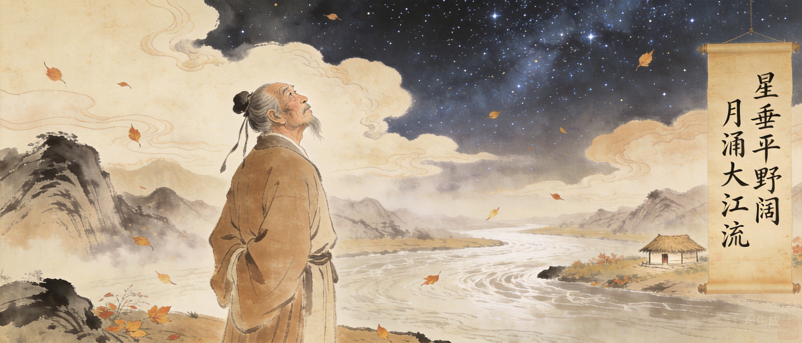

字子美，自号少陵野老。少年「读书破万卷」。
与李白在洛阳相遇，结为至交。
因李林甫「野无遗贤」阴谋落第。
被俘长安，后冒死逃出投奔肃宗。
入蜀，成都浣花溪畔筑草堂。
漂泊湖北湖南，登岳阳楼。
贫病交加，在湘江一叶扁舟上去世。
杜甫的诗记录了安史之乱前后三十年的历史，被称为「诗史」。从「稻米流脂粟米白」的开元盛世，到「路有冻死骨」的社会撕裂，再到「安得广厦千万间」的博大仁爱——他以一人之笔承载了一个时代的重量。但「诗史」这个标签遮蔽了一个事实：杜甫首先是诗圣，然后才是诗史。他的伟大不在于记录了历史，而在于他把历史变成了诗。
从开元盛世到社会撕裂，杜甫的诗是历史的良心。
中国文学史上最著名的友谊。杜甫一生给李白写了十几首诗。
在成都筑草堂，度过了一生最平静的几年。「两个黄鹂鸣翠柳，一行白鹭上青天」正是在此写就。
杜甫发明了「以个人命运为时代做注」的诗学模式。从「稻米流脂粟米白」到「路有冻死骨」，从「会当凌绝顶」到「亲朋无一字」——他的一生就是安史之乱前后三十年的活体记录仪。后世称「诗史」，但这个词遮蔽了更大的奇迹：他不是在记录历史，他是在让历史通过一个具体的灵魂发出声音。
李杜是中国文学史最著名的友谊。杜甫一生为李白写了十余首诗。
资助杜甫建草堂，使杜甫度过了最安稳的岁月。
早年同游梁宋。高适镇蜀时曾接济贫困中的杜甫。